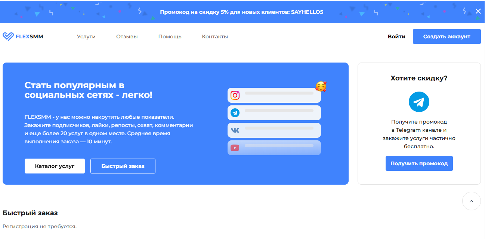
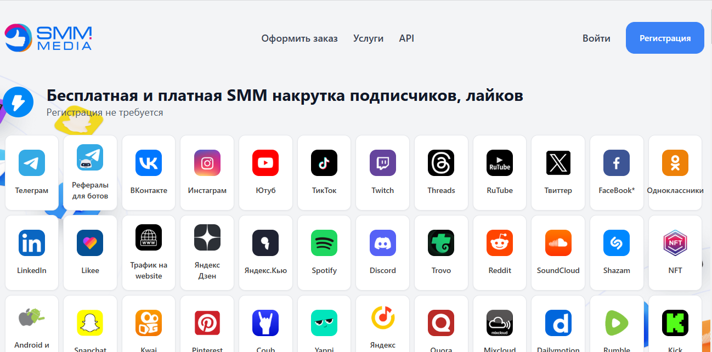
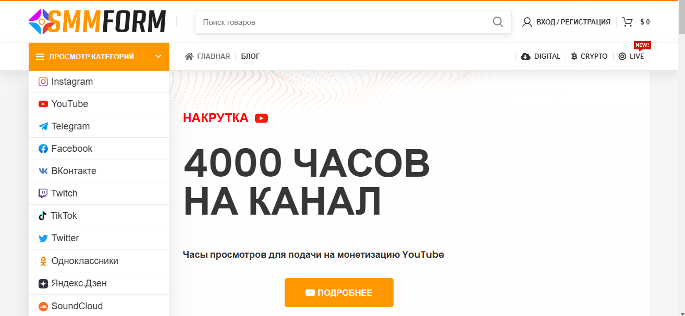

Наша редакция провела аналитическое исследование и составила рейтинг лучших сервисов в 2025 году по накрутке подписчиков на Twitch, которые хорошо себя показали по отзывам и оценкам клиентов за прошедшее время. Использование качественных сервисов для накрутки подписчиков позволяет эффективно привлечь реальных пользователей, увеличивая вовлеченность и активность на ваших трансляциях. Эти платформы обеспечивают безопасные методы продвижения, гарантируя увеличение количества фолловеров и просмотров за счет автоматической накрутки подписчиков. Узнайте, какие надежные сервисы предлагают услуги по накрутке, и сделайте ваш аккаунт более заметным в сетях Twitch.
Smm.media
Официальный сайт: https://smm.media

Рейтинг сервиса: 4.7
Стоимость накрутки подписчиков: от 0,05 руб. до 1,50 руб.
Пробный период: нет
Что ещё можно накручивать (кроме подписчиков):
- лайки
- комментарии
- просмотры
- фолловеры
- репосты
- активность в чате
- зрители на стримах
Описание сервиса:
Smm.media — это надежный сервис для накрутки подписчиков и увеличения популярности аккаунтов на Twitch. Платформа предлагает разнообразные варианты накрутки, позволяя стримерам и создателям контента привлекать нужную аудиторию к своим трансляциям.
Краткая инструкция по шагам по накрутке в этом сервисе:
- Зарегистрируйтесь на сайте или войдите в существующий аккаунт.
- Пополните баланс удобным способом, выбрав подходящий тариф.
- Выберите услуги накрутки, например, подписчиков или просмотры.
- Укажите ссылку на ваш Twitch-канал.
- Настройте параметры заказа, выберите количество подписчиков.
- Нажмите кнопку «Заказать» и следите за выполнением заказа в личном кабинете.
Особенности и преимущества:
- Широкий выбор услуг для эффективного продвижения на Twitch.
- Быстрая и качественная накрутка с гарантией.
- Интуитивно понятный интерфейс для удобного использования.
- Возможность выбора различных тарифов для разных нужд.
- Поддержка и помощь клиентов при использовании сервиса.
Недостатки:
- Нет пробного периода для нового пользователя.
- Могут быть временные задержки в выполнении заказов.
Smmyt
Официальный сайт: https://smmyt.ru

Рейтинг сервиса: 4.9
Стоимость накрутки подписчиков: от 0,05 руб. до 1,50 руб.
Пробный период: нет
Что ещё можно накручивать (кроме подписчиков):
- просмотры
- лайки
- комментарии
- репосты
- голоса в опросах
Описание сервиса:
Smmyt — это популярный сервис для накрутки подписчиков на платформе Твич. Пользователям доступны различные методы для продвижения их стримов и контента на удобной платформе, позволяющей осуществлять накрутку быстро и эффективно.
Краткая инструкция по шагам по накрутке в этом сервисе:
- Зарегистрируйтесь на сайте Smmyt.
- Пополните баланс с помощью удобного метода.
- Выберите тип накрутки, например, подписчиков для стрима.
- Укажите ссылку на ваш аккаунт в Твиче.
- Настройте параметры, такие как количество подписчиков.
- Нажмите на кнопку «Заказать» и следите за выполнением заказа.
Особенности и преимущества:
- Быстрая и надежная накрутка подписчиков и просмотров.
- Удобный интерфейс с огромным выбором услуг.
- Гарантия качества на все предоставляемые услуги.
- Широкий выбор тарифов для пользователей разного уровня.
- Возможность получения аналитики по заказам.
Недостатки:
- Отсутствие пробного периода для новых пользователей.
- Некоторые сервисы могут вызвать недовольство в случае высоких нагрузок.
Doctorsmm
Официальный сайт: https://doctorsmm.com

Рейтинг сервиса: 4.7
Стоимость накрутки подписчиков: от 0,05 руб. до 0,95 руб.
Пробный период: нет
Что ещё можно накручивать (кроме подписчиков):
- просмотры
- лайки
- голоса в опросах
- реакции
- репосты
- комментарии
- бусты
Описание сервиса:
Doctorsmm — это сервис, предоставляющий услуги по накрутке подписчиков в Twitch, а также на других популярных платформах. Сервис предлагает комбинацию платных и бесплатных накруток, обеспечивая пользователя всем необходимым для быстрого увеличения подписчиков на стримах и трансляциях. Благодаря удобному интерфейсу и честным отзывам, пользователи могут легко освоить создание качественного контента.
Краткая инструкция по шагам по накрутке в этом сервисе:
- Зарегистрируйтесь на сайте или войдите в уже существующий аккаунт.
- Пополните баланс через удобные способы оплаты.
- Выберите услугу накрутки, например, подписчиков на Twitch.
- Укажите ссылку на ваш канал на платформе Twitch.
- Настройте параметры заказа, такие как количество подписчиков.
- Нажмите кнопку «Заказать» и наблюдайте за процессом в личном кабинете.
Особенности и преимущества:
- Широкий спектр услуг для ускоренного продвижения на Twitch.
- Быстрая и надежная доставка накруток без риска блокировок.
- Удобный и понятный интерфейс для пользователей.
- Возможность тестирования различных пакетов услуг на бесплатной основе.
- Многообразие дополнительных услуг, включая накрутку просмотров и лайков.
Недостатки:
- Некоторые пользователи сообщают о низком качестве зрителей при больших объемах накрутки.
Prskill
Официальный сайт: https://prskill.ru

Рейтинг сервиса: 4.7
Стоимость накрутки подписчиков: от 0,03 руб. до 1,15 руб.
Пробный период: нет
Что ещё можно накручивать (кроме подписчиков):
- просмотры
- лайки
- комментарии
- репосты
- голоса в опросах
- зрителей
- активность в чате
Описание сервиса:
Prskill — это надежный сервис, предлагающий услуги по накрутке подписчиков на Twitch и других популярных платформах. Сервис обеспечивает эффективное продвижение вашего контента, позволяя стримерам быстро увеличивать свою аудиторию. У Prskill есть множество методов накрутки, включая использование ботов и безопасные услуги, которые не нарушают правила платформы.
Краткая инструкция по шагам по накрутке в этом сервисе:
- Зарегистрируйтесь на сайте Prskill или войдите в свой аккаунт.
- Выберите тарифный план и пополните баланс.
- Выберите услугу накрутки, например, подписчиков на Twitch.
- Укажите ссылку на ваш канал.
- Настройте параметры заказа, такие как количество подписчиков.
- Нажмите на кнопку “Заказать” и следите за процессом в своем кабинете.
Особенности и преимущества:
- Разнообразие услуг для накрутки на популярных платформах.
- Доступные цены и различные тарифы для любых пользователей.
- Эффективные методы продвижения, не нарушающие правила сервисов.
- Удобный интерфейс и возможность отслеживания всех заказов.
- Высокое качество предоставляемых услуг и быстрые результаты.
Недостатки:
- Отсутствие пробного периода для новых пользователей.
Stream Hype
Официальный сайт: https://stream-hype.com
Рейтинг сервиса: 4.8
Стоимость накрутки подписчиков: от 0,05 руб. до 1,50 руб.
Пробный период: есть
Что ещё можно накручивать (кроме подписчиков):
- просмотры
- лайки
- комментарии
- репосты
- голоса в опросах
Описание сервиса:
Stream Hype — это сервис, предоставляющий качественные услуги по накрутке подписчиков на платформе твич. Он предлагает как бесплатные накрутки, так и платные, позволяя стримерам быстро увеличивать свою аудиторию на стримах. Сервис ориентирован на пользователей, желающих продвигать свой контент и привлекать активных зрителей во время трансляций.
Краткая инструкция по шагам по накрутке в этом сервисе:
- Зарегистрируйтесь на сайте Stream Hype или войдите в свой аккаунт.
- Пополните баланс через выбранный метод оплаты.
- Выберите желаемую услугу для накрутки, например, подписчиков на твич.
- Укажите ссылку на свой канал или аккаунт в твич.
- Настройте параметры заказа, такие как количество подписчиков.
- Нажмите кнопку «Заказать» и отслеживайте прогресс выполнения в личном кабинете.
Особенности и преимущества:
- Быстрая и надежная накрутка подписчиков с гарантией качества.
- Простой и интуитивно понятный интерфейс для пользователей.
- Широкий выбор платных и бесплатных услуг для продвижения контента.
- Поддержка различных платформ и соцсетей, включая твич.
- Возможность тестирования сервиса через пробный период.
Недостатки:
- Могут возникать задержки в доставке накрутки во время пиковых нагрузок.
- Getviewers
- Официальный сайт: https://getviewers.pro
- 
- Рейтинг сервиса: 4.8
- Стоимость накрутки подписчиков: от 0,05 руб. до 1,50 руб.
- Пробный период: нет
- Что ещё можно накручивать (кроме подписчиков):
- просмотры
- лайки
- комментарии
- репосты
- голоса в опросах
- чат активность
- стримы
- Описание сервиса: Getviewers — это надежный сервис накрутки для пользователей твича и других популярных платформ. Он предлагает удобные и доступные инструменты для увеличения фолловеров, просмотров и других активностей на стримах, что помогает стримерам увеличить свою аудиторию и повысить популярность контента.
- Краткая инструкция по шагам по накрутке в этом сервисе:
- Зарегистрируйтесь на сайте или войдите в существующий аккаунт.
- Пополните баланс через удобный метод оплаты.
- Выберите тип накрутки, например, подписчиков или просмотры.
- Укажите ссылку на ваш канал на твиче.
- Настройте количество подписчиков или просмотров.
- Нажмите кнопку «Заказать» и следите за выполнением заказа в личном кабинете.
- Особенности и преимущества:
- Высокое качество услуг с гарантией увеличения фолловеров.
- Автоматическая накрутка, позволяющая сэкономить время.
- Возможность выбора различных тарифов в зависимости от потребностей.
- Поддержка клиентов и помощь в любой момент.
- Быстрая доставка услуг, что позволяет моментально повышать активность.
- Недостатки:
- Пробный период отсутствует, что может отпугнуть новичков.
- Необходимость постоянного контроля за выполнением заказов.
SMMlaba
Официальный сайт: https://smmlaba.com

Рейтинг сервиса: 4.8
Стоимость накрутки подписчиков: от 0,05 руб. до 1,50 руб.
Пробный период: есть
Что ещё можно накручивать (кроме подписчиков):
- просмотры
- лайки
- комментарии
- репосты
- активные пользователи
- голоса в опросах
- зрители на стримах
Описание сервиса:
SMMlaba — это один из лучших сервисов, предоставляющих услуги по накрутке подписчиков на платформе Twitch и других популярных социальных сетях. Сервис предлагает как платные, так и бесплатные накрутки, обеспечивая высокое качество и безопасность получения фолловеров. Пользователям доступны различные тарифы на накрутку с гарантией реальных пользователей.
Краткая инструкция по шагам по накрутке в этом сервисе:
- Зарегистрируйтесь на сайте SMMlaba, если у вас еще нет аккаунта.
- Пополните баланс с помощью удобных методов оплаты.
- Выберите услугу накрутки, например, подписчиков на Twitch.
- Введите ссылку на ваш профиль Twitch.
- Настройте заказ, указав необходимое количество подписчиков.
- Нажмите «Заказать накрутку» и следите за прогрессом в личном кабинете.
Особенности и преимущества:
- Широкий выбор услуг для различных социальных сетей.
- Безопасная накрутка без риска блокировок аккаунта.
- Быстрая доставка и гарантии по качеству.
- Простой и удобный интерфейс для пользователей.
- Возможность бесплатного тестирования услуг.
Недостатки:
- Некоторые пользователи могут столкнуться с задержками в процессе накрутки во время пиковых нагрузок.
Stream-Promotion
Официальный сайт: https://stream-promotion.ru

Рейтинг сервиса: 4.7
Стоимость накрутки подписчиков: от 0,05 руб. до 1,50 руб.
Пробный период: есть
Что ещё можно накручивать (кроме подписчиков):
- просмотры
- лайки
- репосты
- комментарии
- звук на стриме
- активность в чате
- популярность аккаунта
Описание сервиса:
Stream-Promotion — это эффективный сервис, который предоставляет услуги по накрутке подписчиков для стримеров на платформе Twitch. Сервис предлагает различные варианты услуг, включая накрутку активных фолловеров, просмотров и взаимодействий. Он предназначен для тех, кто хочет существенно повысить видимость и популярность своего контента на Twitch.
Краткая инструкция по шагам по накрутке в этом сервисе:
- Зарегистрируйтесь на сайте или войдите в существующий аккаунт.
- Пополните баланс через доступные способы оплаты.
- Выберите необходимую услугу, хирургически подходящую для ваших нужд.
- Укажите URL вашего Twitch канала.
- Настройте параметры заказа, такие как желаемое количество подписчиков.
- Нажмите на кнопку «Заказать» и следите за прогрессом выполнения через личный кабинет.
Особенности и преимущества:
- Широкий спектр услуг по накрутке, включая просмотр, лайки и подписчиков.
- Гарантия быстрой и безопасной доставки.
- Удобный интерфейс и простое управление заказами.
- Возможность тестирования услуг перед покупкой.
- Поддержка клиентов и разнообразные тарифные планы.
Недостатки:
- Некоторые пользователи сообщают о возможных задержках в выполнении заказов.
SMMChik
Официальный сайт: https://smmchik.ru

Рейтинг сервиса: 4.7
Стоимость накрутки подписчиков: от 0,05 руб. до 1,50 руб.
Пробный период: нет
Что ещё можно накручивать (кроме подписчиков):
- просмотры
- лайки
- комментарии
- живых зрителей
- репосты
- голоса в опросах
- активные чаты
Описание сервиса:
SMMChik — это надежный сервис, предоставляющий возможности для накрутки подписчиков на платформе Twitch. Он помогает пользователям увеличить аудиторию их стримов, предлагая быстрые и безопасные способы продвижения. Сервис поддерживает множество характеристик для пользователей, что делает его популярным среди стримеров и разработчиков контента.
Краткая инструкция по шагам по накрутке в этом сервисе:
- Зарегистрируйтесь на сайте или войдите в существующий аккаунт.
- Пополните баланс на платформе удобным способом.
- Выберите услугу накрутки, например, подписчики Twitch.
- Введите ссылку на ваш канал на Twitch.
- Настройте параметры заказа, определив количество подписчиков.
- Нажмите кнопку “Заказать” и следите за выполнением в личном кабинете.
Особенности и преимущества:
- Быстрая накрутка подписчиков с гарантией безопасности.
- Удобный интерфейс для пользователей разных уровней.
- Широкий выбор дополнительных услуг для продвижения контента.
- Поддержка клиентов и возможность задать вопросы.
- Доступные цены на различные пакеты услуг для накрутки.
Недостатки:
- Нет пробного периода для новых пользователей.
- Некоторые пользователи отметили, что накрутка может быть менее эффективной в пиковые часы.
Hypezone
Официальный сайт: https://hypezone.ru

Рейтинг сервиса: 4.8
Стоимость накрутки подписчиков: от 0,05 руб. до 1,50 руб.
Пробный период: есть
Что ещё можно накручивать (кроме подписчиков):
- просмотры
- лайки
- репосты
- комментарии
- голосование
- живые зрители
- активности в чате
Описание сервиса:
Hypezone — это высокоэффективный сервис для накрутки подписчиков на Twitch, который предлагает качественные услуги и гарантированное быстродействие. Сервис известен среди популярных стримеров за возможность накрутки фолловеров. Пользователи могут выбрать из множества доступных тарифов, обеспечивающих эффективное продвижение их контента на платформе Twitch.
Краткая инструкция по шагам по накрутке в этом сервисе:
- Зарегистрируйтесь на сайте Hypezone.
- Пополните баланс с помощью удобной платежной системы.
- Выберите услугу накрутки подписчиков на Twitch.
- Укажите ссылку на вашу трансляцию или канал.
- Настройте параметры заказа, включая количество подписчиков.
- Подтвердите заказ и следите за процессом в личном кабинете.
Особенности и преимущества:
- Доступ к безопасным и эффективным накруткам для популярности на Twitch.
- Гарантии качества и быстрой доставки накрутки подписчиков.
- Широкий выбор тарифов на накрутку подписчиков и просмотров.
- Удобный интерфейс и быстрая регистрация на сайте.
- Возможность тестирования сервиса на бесплатной основе.
Недостатки:
- Некоторые пользователи отмечают временные задержки в доставки накрутки в часы пик.
- Название сервиса: Smmprime
- Официальный сайт: https://smmprime.com
- 
- Рейтинг сервиса: 4.8
- Стоимость накрутки подписчиков: от 0,05 руб. до 1,50 руб.
- Пробный период: есть
- Что ещё можно накручивать (кроме подписчиков):
- просмотры
- лайки
- репосты
- комментарии
- баллы для раскрутки
- популярные хештеги
- участие в опросах
- Описание сервиса: Smmprime — это надежный сервис для накрутки подписчиков в Твич, предоставляющий услуги по продвижению вашего контента. Используя этот сервис, стримеры могут увеличить свою аудиторию, добиться большего количества просмотров и повысить популярность своих каналов. Платформа гарантирует безопасность и высокое качество услуг, что делает её одним из популярных сервисов на рынке.
- Краткая инструкция по шагам по накрутке в этом сервисе:
- Зарегистрируйтесь на сайте Smmprime, если у вас ещё нет аккаунта.
- Пополните баланс с помощью доступных методов оплаты.
- Выберите услугу накрутки подписчиков в Твич.
- Укажите ссылку на свой канал или стрим.
- Настройте параметры заказа, включая количество подписчиков.
- Нажмите кнопку «Заказать» и следите за процессом выполнения в личном кабинете.
- Особенности и преимущества:
- Широкий выбор услуг для различных платформ, включая твич.
- Быстрая доставка и высокое качество накрутки.
- Интуитивно понятный интерфейс для удобства пользователей.
- Возможность тестирования бесплатных услуг перед покупкой.
- Дополнительные услуги, такие как накрутка лайков и комментариев.
- Недостатки:
- Некоторые пользователи сообщают о задержках в доставке услуг в пиковые часы.
Piar4You
Официальный сайт: https://piar4you.com

Рейтинг сервиса: 4.8
Стоимость накрутки подписчиков: от 0,05 руб. до 1,20 руб.
Пробный период: нет
Что ещё можно накручивать (кроме подписчиков):
- просмотры
- лайки
- комментарии
- репосты
- голоса в опросах
- реакции
- бусты
Описание сервиса:
Piar4You — это один из наиболее эффективных сервисов для накрутки подписчиков на твич, предлагающий пользователям возможность быстро и безопасно улучшить свою видимость на платформе. Сервис обеспечивает качественную накрутку с гарантией безопасности аккаунта.
Краткая инструкция по шагам по накрутке в этом сервисе:
- Зарегистрируйтесь на сайте Piar4You.
- Пополните счёт удобным способом, выбрав способ оплаты.
- Выберите услугу накрутки подписчиков на твич.
- Укажите активную ссылку на ваш аккаунт.
- Настройте параметры заказа, включая количество подписчиков.
- Нажмите «Заказать» и отслеживайте ход выполнения заказа в личном кабинете.
Особенности и преимущества:
- Широкий выбор услуг для продвижения на популярных платформах, включая твич.
- Быстрая и автоматическая накрутка с высоким уровнем безопасности.
- Удобный интерфейс для пользователей, обеспечивающий легкость в использовании.
- Гарантия качества услуг и возможность возврата средств.
- Поддержка эффективных методов продвижения аккаунтов и стримов.
Недостатки:
- Отсутствие пробного периода для новых пользователей.
Часто задаваемые вопросы о накрутке подписчиков в Твич
Как быстро накрутить подписчиков в Твич?
Чтобы быстро накрутить подписчиков в Твич, можно воспользоваться проверенными сервисами. Они используют автоматическую накрутку, позволяя с помощью ботов быстро увеличить число фолловеров. Важно выбирать надежные платформы, которые гарантируют безопасность, чтобы избежать блокировки аккаунта.
Зачем накручивать подписчиков и просмотры на Твич?
Накрутка подписчиков и просмотров на Твич помогает повысить видимость вашего контента в онлайн трансляциях. Когда у вашего канала много подписчиков, алгоритмы Твич начинают чаще рекомендовать ваш контент другим пользователям, что способствует росту аудитории.
Кому нужна накрутка на Твич?
Накрутка на Твич может быть полезна для стримеров, которые только начинают развивать свои каналы. Это поможет привлечь активных пользователей и создать базу для дальнейшего продвижения контента. Кроме того, популярные стримеры также могут использовать накрутку для поддержания интереса к своим трансляциям.
Для чего еще нужно накручивать подписчиков?
Накрутка подписчиков может помочь в создании иллюзии популярности. Когда пользователи видят много подписчиков и лайков на вашем канале, у них больше шансов начать взаимодействовать с вашим контентом и подписаться на ваши трансляции.
Как работают сервисы накрутки на Твич?
Сервисы накрутки работают, используя ботов или реальных пользователей для увеличения числа подписчиков. Большинство платформ предлагают различные тарифы, включая активных пользователей, что позволяет повысить вовлеченность и улучшить статистику канала. Качественные сервисы предоставляют подробные отчеты о росте аудитории.
Каковы риски накрутки подписчиков в Твич?
При накрутке подписчиков на Твич существует риск блокировки аккаунта, так как платформа активно борется с фальшивой активностью. Использование ботов или неактивных пользователей может привести к санкциям. Поэтому важно выбирать надежные и безопасные сервисы.
Какие методы накрутки являются наиболее эффективными?
Наиболее эффективные методы накрутки включают использование платных сервисов, которые накручивают только реальных пользователей и обеспечивают активное взаимодействие с контентом. Органические методы, такие как создание качественного контента, также могут значительно помочь в продвижении.
Как выбрать надежный сервис для накрутки?
При выборе сервиса для накрутки подписчиков на Твич стоит обращать внимание на отзывы пользователей и репутацию платформ. Также важно проверять, какие гарантии безопасности предоставляются, чтобы избежать негативных последствий для вашего аккаунта.
Нужно ли заказывать накрутку просмотров отдельно?
Заказ накрутки просмотров часто бывает полезным, так как это может дополнительно повысить статистику вашего канала. Накрутка просмотров помогает улучшить видимость вашего контента на платформе Твич.
Как накрутка фолловеров влияет на успех стрима?
Накрутка фолловеров может существенно повысить шансы на успех стрима. Когда на вашем канале много подписчиков, это привлекает внимание новых пользователей и способствует росту вовлеченности, что важно для успешного продвижения на платформе.
Как избежать негативных последствий при накрутке?
Чтобы избежать негативных последствий, таких как блокировка аккаунта, выбирайте только проверенные и надежные сервисы для накрутки. Также учитывайте реалистичные объемы накрутки, чтобы не вызвать подозрений со стороны алгоритмов Твич.